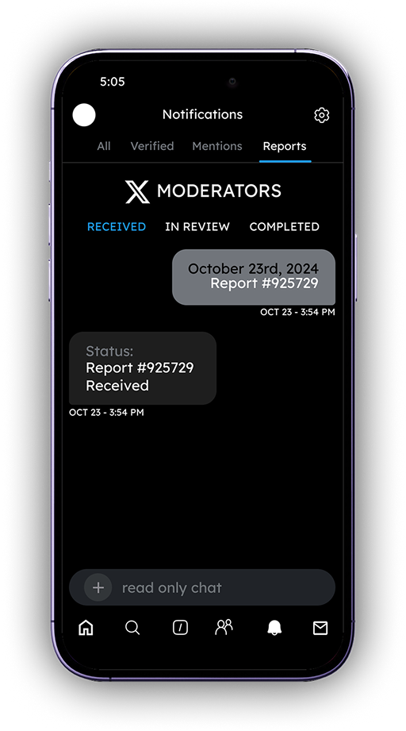
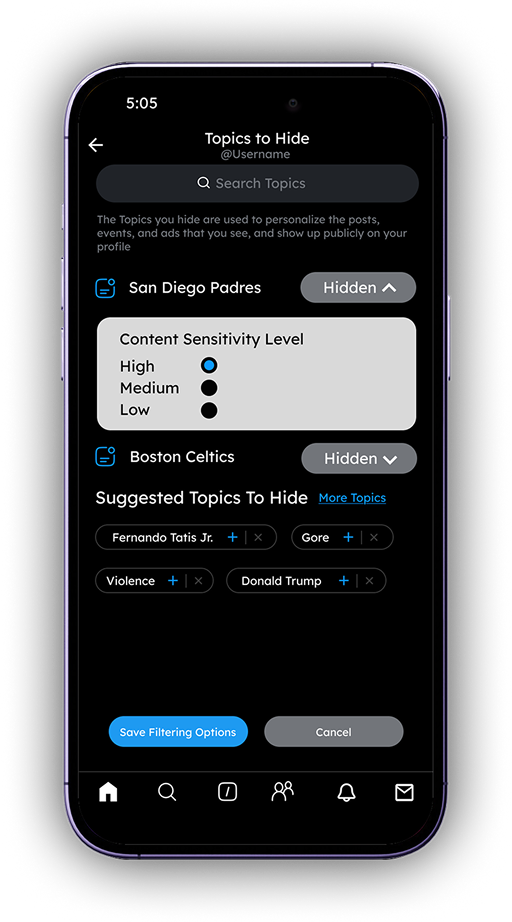
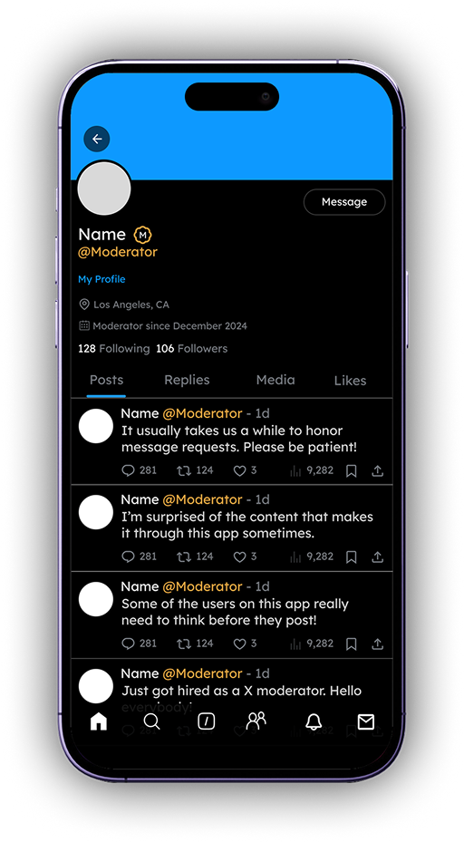
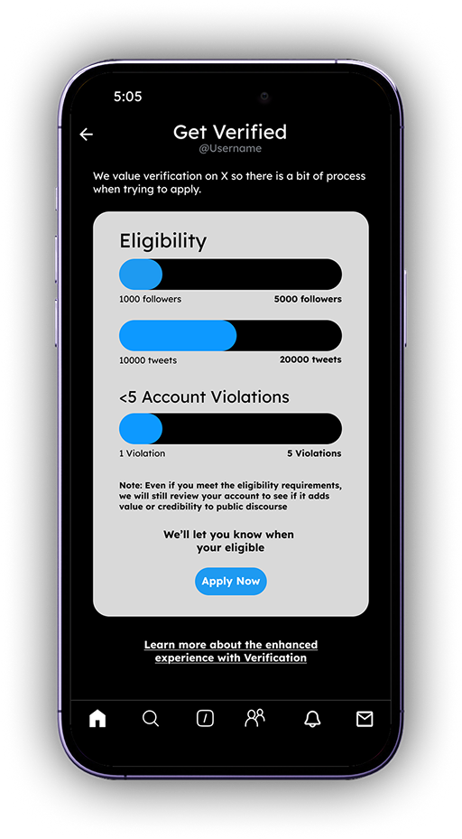

Enhancing X Usability
A case study focused on redesigning a social platform to improve usability, accessibility, and safety.
PROBLEM
Persistent issue of harmful content on the social media platform X...
I've encountered a significant amount of harmful content on X...
PROPOSED SOLUTIONS
After spending large amounts of time researching this issue...
Improved Reporting System
The Reports” tab lets users track the status of their reported posts, adding labels like “In Review” or “Completed.” This builds trust by showing users that their concerns are acknowledged and being addressed.
Detailed Filtering Options
This page and many more add customizable content filters, allowing users to see only topics they select and block topics they want to avoid. A content sensitivity setting (e.g., low to high) further helps users control what appears in their feed, improving comfort and safety.
On-Platform Moderators
Introduces verified moderator accounts that actively review and respond to content on X, making human moderation more transparent and accountable. Giving moderators a visible presence helps users feel their concerns are being addressed by real people, not just automated systems.
Strict Verification
This redesigns the blue check mark system to include eligibility requirements, ensuring it reflects authenticity rather than just payment. By restoring credibility to the badge, users can better trust verified accounts and reduce algorithmic bias.
WHITE PAPER RESEARCH
Usage of Elon Musk’s X, formally known as Twitter, experienced a 30% drop in usage from 2023 to 2024.
Due to policy shifts and weakened moderation, many users and news outlets cite safety, abuse, and user trust as reasons for user decline. My research aimed to investigate the design implications to regain user trust and platform usability.
COMPETITIVE ANALYSIS
Other platforms like Instagram, Reddit, and YouTube offer stronger content controls, clearer moderation feedback, and more credible verification systems than X.
Instagram gives users control over what content they see through sensitivity settings and topic filters. Reddit uses a hybrid moderation model with active community mods and transparent reporting outcomes. YouTube’s verification requires eligibility based on influence and authenticity, preserving the badge’s credibility.
YouTube
USER INTERVIEWS
All of my interviewees had a desire for better content control and filters
Research Questions:
- How effective is X’s current content moderation system in identifying and removing harmful content?
- How has the change in management and rebranding of X affected the app, and what measures could be taken to maintain user engagement and app value?
- How could customizable content filters and greater prioritization of user reporting impact the prevention of harmful content spread?
- What role should human moderators each play in identifying and removing harmful content, while still respecting user privacy and free speech?
THE MAIN INSIGHT
While this may not seem like a significant problem certain content can have a deeply emotional impact on users, making effective content control essential for a safer experience.
Major Insights
Theme 1: User Experience and Emotional Impact
There are many mixed feelings from users when it comes to X. On one hand, they enjoy the casual, social vibe—sharing quick thoughts, funny memes, and connecting with others. But on the other hand, they’re worried that X is losing its charm, especially for younger users. Due to the high volume of negativity and toxic interactions, X has had a strong emotional impact on users.
Theme 2: Desire for Greater User Control and Personalization
While users find tools like muting and blocking helpful, they feel it’s not enough. They’re looking for more advanced options to filter and customize their feeds to better match their interests, similar to the control they have on other social media apps. Users want more flexibility and specific options so they can shape their experience on X to feel more personal and enjoyable.
Theme 3: Pessimism Toward Platform Improvement
Users are doubtful about X’s ability to make real improvements. They feel the platform is stuck or even going downhill, especially when they compare it to more dynamic apps like TikTok or Instagram. People are concerned that X is losing its appeal, particularly for younger audiences, and they’re not confident that X is committed to fixing issues like content quality and moderation. Overall, there’s a feeling that X might not take the steps needed to become a safer, more engaging place.
USABILITY TESTING + IMPROVEMENTS
Different sections for the Reports Tab
- The Reports tab was the first design that I had created. While I don’t have my previous design, basically the received, in review, and completed tabs were all combined into one chat. When presenting this to users, they saw this as very unorganized and something that would cause confusion.
- The new design splits the Reports tab into three sections so users are able to differentiate what each report is and what their status is.
Implementing content sensitivity levels
- Prior to this new design, I was debating what type of controls users should have when deciding what content they wanted to see on their feed. Topics to Hide and Topics to See were tabs I was fully set on, but I wanted users to have a little more freedom based on the data I had collected.
- Instead of having users just click topics they wanted to hide, I implemented a design that allows them to set a certain sensitivity level with high being complete removal of that topic and low being no removal of that topic. Often users are fine with seeing a topic, but may want to limit its appearance on their feed.
Filtering comment sections
- This design ties in with my design that introduces a new verification process specifically for content creators or bigger accounts. Personally, I use X almost every day so with this design I wanted to think more outside of the box. I wanted to use the data I gathered as well as what I’ve experienced and create a feature that would be more beneficial than users would think.
- This feature originally wasn’t part of my prototype, but I think it’s beneficial because it allows users to filter their comment sections based on general replies from the general public and verified replies from more official accounts. There’s been many times where I’ve gone onto a post and seen comments that are either inappropriate or have no relevance to the post.
CONCLUSION + LESSONS LEARNED
What I’d do differently next time.
- I Should Have Involved a Wider Range of Users Earlier. Most of my insights came from a small group of users who already had strong opinions about X. While valuable, this limited the diversity of perspectives. In future projects, I’d prioritize including users with different engagement levels—such as casual users, new users, and even those who left the platform—so I can better understand how content safety concerns affect a broader audience.
- Prototyping Earlier Would Have Improved the Final Design. I spent too much time defining features before translating them into visuals. As a result, the prototyping phase felt rushed, and user testing could only focus on surface-level feedback. Next time, I’d build wireframes earlier and iterate on them with user input to ensure the final design is both practical and user-informed.
- Clearer Goals and Success Metrics Were Needed. While I had a strong sense of the problems I wanted to solve, I didn’t define how I would measure success. This made it harder to evaluate the impact of my solutions. In future case studies, I’d set clear UX goals—like reducing friction in the reporting process or increasing perceived safety—and test whether the design changes move the needle.
- Some Features Needed Deeper Justification. A few ideas, like content sensitivity levels or moderator chat, were well-intentioned but lacked strong supporting data. I realized that even good ideas need clear user demand or precedent to back them up. Next time, I’d validate each proposed feature more rigorously through user feedback or competitive benchmarking before including it in the final solution.